Blogs - Jaime Rodriguez
Blogs - Jaime Rodriguez
Channel 9 Blog for Jaime Rodriguez
Go build a Windows Store app [0:02:07] [2012/09/19]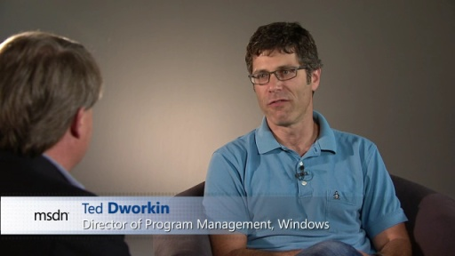Want to know what some of the best/smartest engineers in the Windows 8 team had to tell developers ?? This video is the 2 minute recap of some great/candid conversations with some of Windows 8…
Windows Phone Design Days - Perceived Performance [0:19:45] [2010/08/14]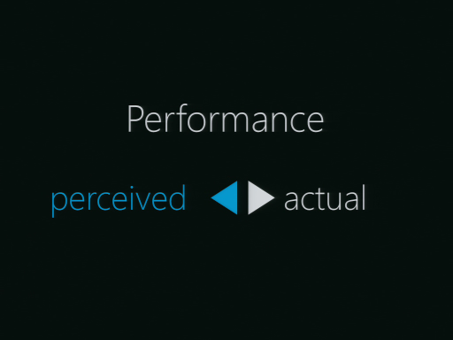A great user experience has to be responsive, this requires good application design and it also requires mastering the art of perceived performance: providing feedback to the user, and delighting her…
Windows Phone Design Days- Templates [0:04:01] [2010/08/14]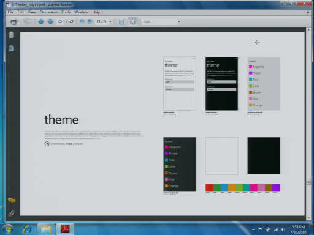Chad Roberts drills through the red-lines and green-lines for the templates in the UX Design Guidelines for Windows Phone. This video is part of the Windows Phone Design Days Series
Windows Phone Design Days - Voice [0:32:00] [2010/08/14]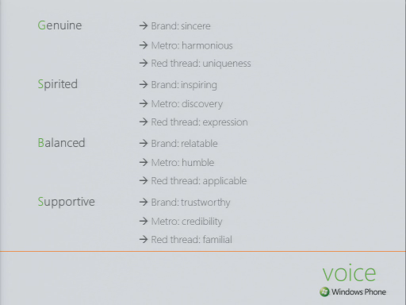Karen Kesler shares amazing insights into the "voice" within Windows Phone. Voice is not speech, nor is it tone, you gotta watch this video to get it the way Karen does. This video is part…
Windows Phone Design Days - Pivot and Pano [0:32:18] [2010/08/14]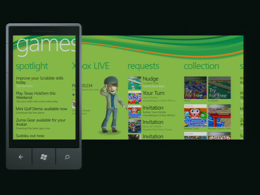Amy Alberts and Chad Roberts demistify and quickly get down to the escence of pivots and panoramas, the two pillars to building great Windows Phone applications. This video is part of the Windows…
Windows Phone Design Days - Applications [0:17:40] [2010/08/14]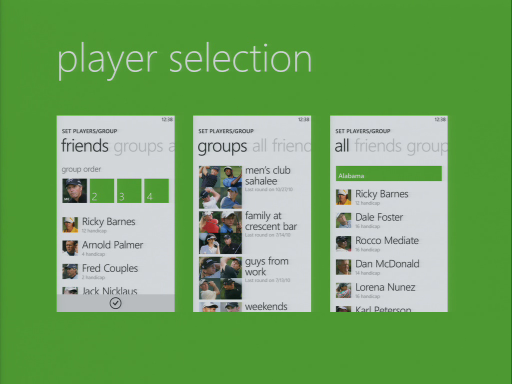Rhon Manlapaz and Ryan Bickel deconstruct a Windows Phone application and show you how the core controls and interactions blend together to create beautiful, emotional experiences. This video is part…
Windows Phone Design Days - Target Sizes [0:13:39] [2010/08/14]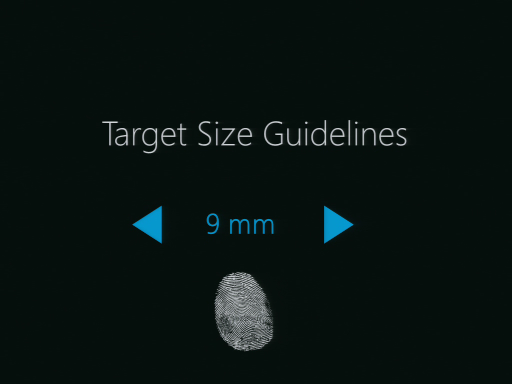9 mm! According to Tirthankar Sengupta, that is the perfect target size for Windows phone apps. Tirthankar distills the target sizes for moble apps in this insightful video. This video is part of the…
Windows Phone Design Days - Audio [0:34:26] [2010/08/14]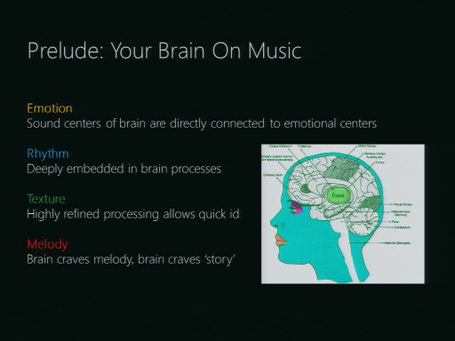Matthhew Bennett, Senior Sound & Sensory Designer on Windows Phone demonstrates how to create mobile audio that sings. This video is part of the Windows Phone Design Days Series
Windows Phone Design Days - Globalization [0:37:45] [2010/08/14]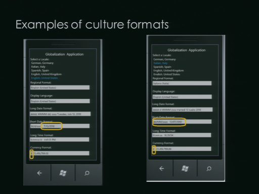Ayman Raslan and Franklin Yow share an overview of internationalization and localization of Windows Phone applications.This video is part of the Windows Phone Design Days Series.
Windows Phone Design Days - Blend [0:41:20] [2010/08/14]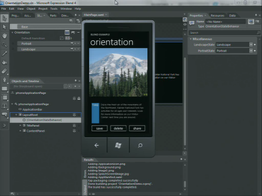Celso Gomes and Peter Blois blaze their way through Expression Blend and demonstrate how to create amazing Windows phone apps using our Expression Suite. They also share the roadmap for Expression…
Windows Phone Design Days - Documentation [0:11:18] [2010/08/14]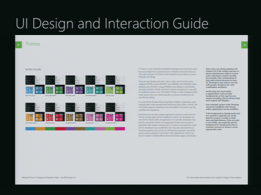Chris Kilbourn, Senior Content Publisher for Windows Phone outlines all the documentation and guides available for Windows Phone designers. This video is part of the Windows Phone Design Days Series.
Windows Phone Design Days - Animation [0:34:22] [2010/08/14]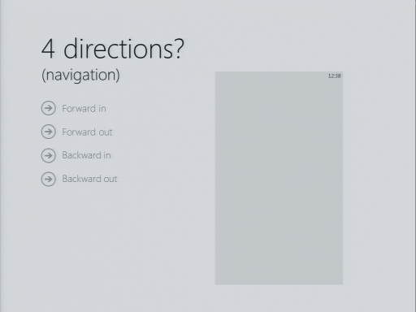Jeff Arnold, Lead Motion Designer for Windows Phone uncovers the core animations and the principles behind motion on Windows Phone 7. This video is part of the Windows Phone Design Days Series
Windows Phone Design Days - Metro [0:29:48] [2010/08/14]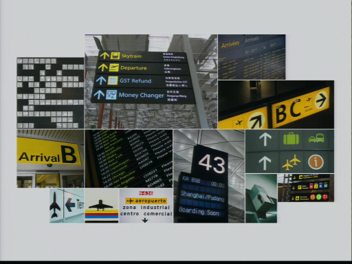Jeff Fong, the Design lead for Windows Phone kicks-off Windows Phone design day with his overview of Metro. This video is part of the Windows Phone Design Days Series.
Windows Phone Design Days - Personas [0:03:33] [2010/08/14]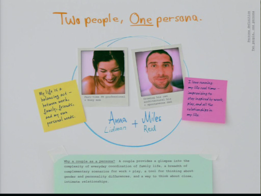Tracey Lovejoy, Experience Researcher in Windows Phone team shares her research on Anna and Miles, the Life Maximizers who need a Windows Phone. This video is part of the Windows Phone Design Days…
.NET 4 Client Profile [0:07:28] [2009/10/24]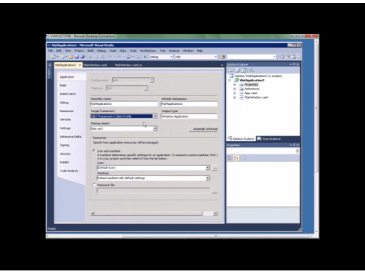Jossef Goldberg and
Jaime Rodriguez discuss the status of Client Profile in .NET 4 and VS2010 beta 2. Client profile is a subset of the full .NET framework that includes only the assemblies needed…
New Text Stack in WPF 4 [0:07:50] [2009/10/24]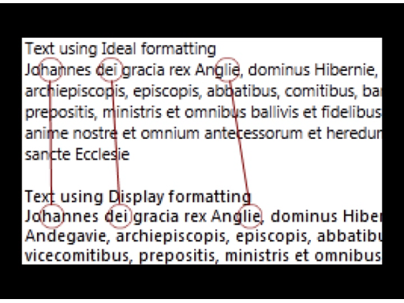Join Chipalo Street and
Jaime Rodriguez to hear about the new text stack in WPF 4. With the new TextFormatingMode and TextRenderingMode options you are now in control of text and can produce sharp…
Graphics improvements in WPF 4 [0:11:05] [2009/10/24]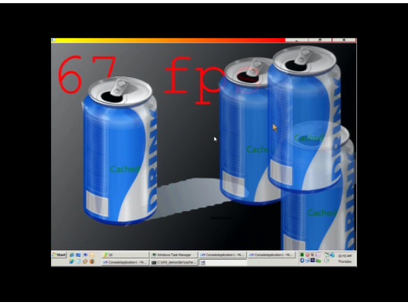David Teitlebaum and
Jaime Rodriguez discuss the graphics improvements in .NET 4. David demoes cached composition, pixel shaders 3, and animation easing functions. He also explains discusses…
What's new in the WPF and Silverlight "Cider" Designer in VS2010 beta2 [0:14:15] [2009/10/24]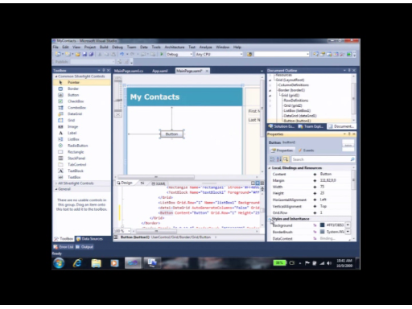Mark Wilson-Thomas and
Jaime Rodriguez discuss the improvements to VS2010's "Cider" designer for WPF and Silverlight.
Silverlight devs, Cider has finally arrived. Party on. WPF devs…